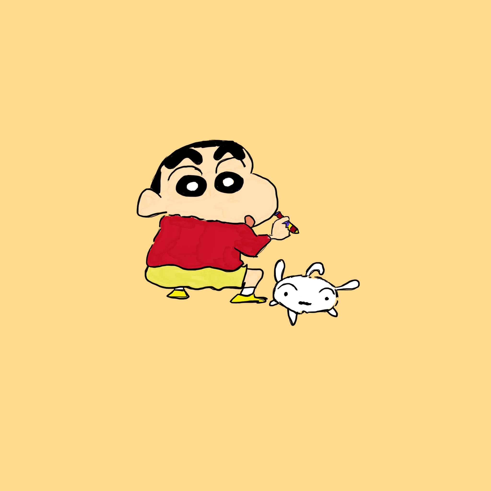

Crayon Shin Chan

Crayon Shin Chan
Wikipedia.com
(I know the character as, la bi xiao xin, in Chinese)
is a Japanese manga series written and illustrated by Yoshito Usui.
Reasons why I like Crayon Shin Chan
- I strive to live as carefree as he does.
- He is really funny.
- He seems like a clueless kid but is actually pretty smart.